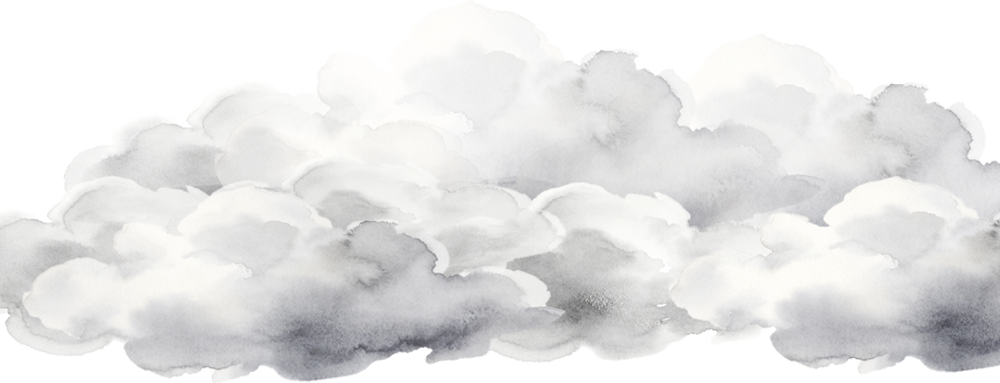
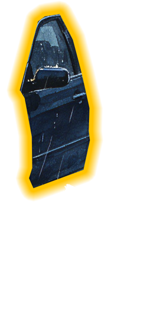
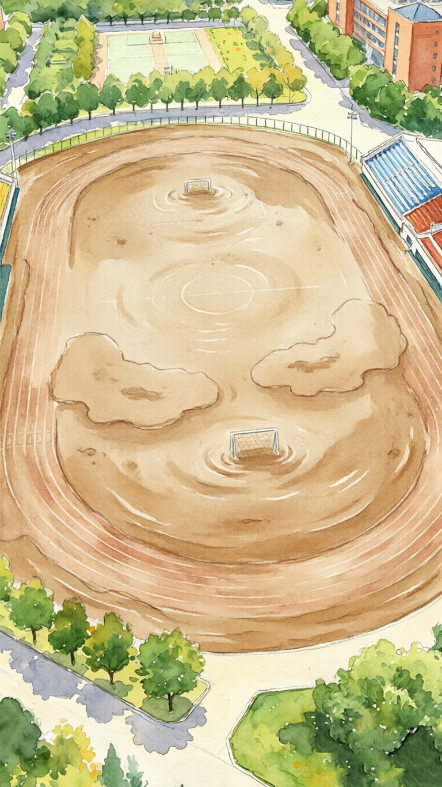
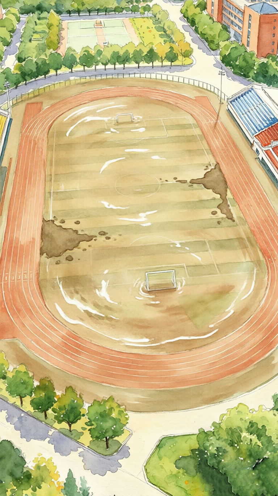

洪流中的城科





第一幕 · 暴雨惊梦
重庆城市科技学院。凌晨1点，雨开始下。起初只是淅淅沥沥，很快变成暴雨倾盆。闪电撕裂夜空，雷声像炮弹一样砸进窗户。“寝室的玻璃被打得一直响，雨跟子弹一样，又大又密。”凌晨2点，永川区气象台发布暴雨红色预警。接下来两个小时里，降雨量将飙升至296.6毫米，打破当地纪录。
详情显示
第二幕 · 洪水围城
凌晨 2:00 – 4:00，降雨峰值。小安溪的水位以肉眼可见的速度疯涨。河水漫过堤岸，裹挟着泥沙、树枝和杂物，向校园低洼地带戏卷而来。沿河道路最先沦陷。停在路边的车辆被洪水吞噬——先是轮胎，然后是车身，最后"被淹得只能看到车顶"。校园周围的农田"被淹了一两米"，整个视野变成一片浑浊的汪洋。一楼寝室开始进水。两万名在校师生，在黑暗中听着水声一点点逼近。一名在校生说："学校周围很多车遭遇水淹，跳石河的水一下子涨了两三米，那个速度太快了，根本来不及反应。"凌晨 4 点，学校发布紧急通知：全面断水、断电、断气。这不是一场演习。这场暴雨最终在永川区造成 3 人遇难、17 人失联。全区紧急避险转移 168 人，紧急转移安置 82 人。重庆市政府紧急启动地质灾害三级应急响应，由公安、应急、消防等部门组成的 400 余人救援抢险队伍火速赶赴现场。
详情显示
第三幕 · 紧急撤离
凌晨 4:00 起，重庆城市科技学院全校停课，无限期。黑暗中，两万多名学生开始收拾行李。没有灯，手机电量所剩无几。他们背上书包，卷起裤腿，蹚着齐膝的积水和淤泥，沿着地势较高的公路一侧排队撤离。校门口，工程车正在清淤。拖车一辆接一辆地把泡在水里的轿车拖走。有记者当晚赶到现场，发现街道深处的淤泥仍然"没过脚踝"。学校发出通知：在报备后可以离校返家。一名学生对华商报记者说："学校已经停水停电，正组织大家有序撤离到附近旅店等地方暂时住下来。"冰冷的泥水，漆黑的走廊，两万人的步伐——那是城科历史上最漫长的一个早晨。
详情显示
🎬 观看现场特辑
第四幕 · 灯火微光
凌晨 4:00 – 6:00，洪水最深的时候，一盏灯亮着。在校门外的烧烤店里，一对经营淄博烧烤的年轻夫妻，做出了一个决定。住在烧烤店楼上的王同学，一直在观察小安溪的水位。仅仅一个多小时里，路边停放的车辆就被完全淹没。她立即通知了楼下的夫妻俩。凌晨 4 点，他们第一次尝试开车撤离。洪水堵住了所有出口，只能原路折返。水位还在涨。等到凌晨 6 点，他们发动引擎，第二次冲进洪水。"那时候水位已经到了车前盖，路上很多车都熄火了。"王同学回忆，"哥哥姐姐把车当船开，才终于成功离开。"夫妻俩把王同学带回自己家，收拾好床铺，递上新牙刷，塞满零食。洪水退后，王同学找到住处要离开时，他们又塞了一大袋零食。"哥哥姐姐冒着车报废的风险带我出去，我真的会记一辈子他们的大恩。"洪水过后，街道恢复供水供电，道路淤泥清理完毕。那张烧烤店的门面依然开着，灯光依然亮着。故事的结尾没有英雄披风，只有两个普通人，一辆车，和一颗愿意冒险的心。
详情显示
第五幕 · 雨后新生
5 月 24 日下午 – 5 月 26 日。当暴雨终于停歇，灾后重建的战斗正式打响。由中国安能三局重庆救援基地、重庆市专业应急救援总队、重庆市专业应急救援永川支队、国家隧道应急救援中国交建重庆队等组成的 400 余人救援力量，全力开展搜救。5 月 24 日下午 2 时——距离暴雨峰值仅 10 小时——校内积水基本消退。工作人员随即启动全范围的清淤、消杀和场地清理工作。学校通知：周一临时停课。随后更新为：全校停课，期限不限。5 月 26 日，断水断电两天的校园终于全面恢复供电供水。道路恢复通行，学生陆续返校。小安溪重新归于平静。河面上，一只白鹭掠过，飞向东升的太阳。这座城市没有被打倒。两万名城科人，经历了人生中最大的一场雨，也见证了这片土地上最温暖的几束光。
详情显示
↓ 向下滑动 继续观看
↓ 向下滑动 继续观看
↓ 向下滑动 继续观看
↓ 向下滑动 继续观看